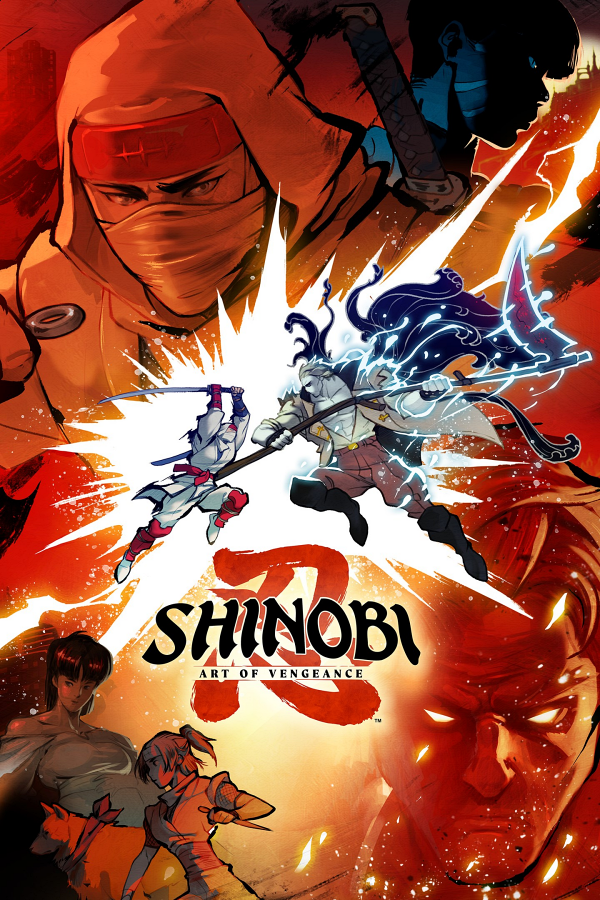

Game profile

Shinobi: Art of Vengeance
Every archived year-end list appearance, including placement and points earned.
9List appearances
1Years represented
Points by Year
232025 points
List History
| Year | Source | List | Placement | Points |
|---|---|---|---|---|
| 2025 | Eurogamer | The 50 best games of 2025, ranked | 27 | 1 |
| 2025 | Game Informer | The Top Ten Games of 2025 | 8 | 5 |
| 2025 | GameSpot | The Best Games Of 2025 | Unranked | 1 |
| 2025 | Geeky Brummie | Top 50 Most Notable Games of 2025 | 39 | 1 |
| 2025 | Polygon | The 50 best games of 2025, as chosen by Polygon | 36 | 1 |
| 2025 | Rolling Stone · Christopher Cruz | The 25 Best Video Games of 2025 | 14 | 3 |
| 2025 | Slant Magazine | The Best Video Games of 2025 | 21 | 3 |
| 2025 | TechRadar | TechRadar Gaming’s Game of the Year list 2025: our top 20 games from this year | 11 | 3 |
| 2025 | WayTooManyGames | Top 20 Best Games of 2025 | 5 | 5 |